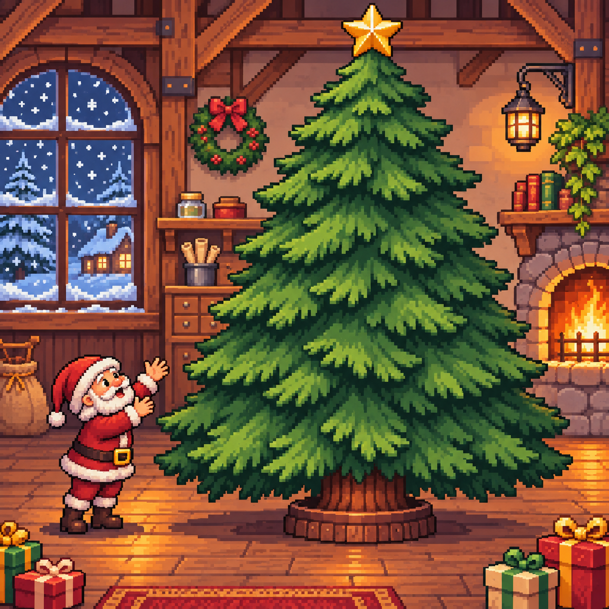
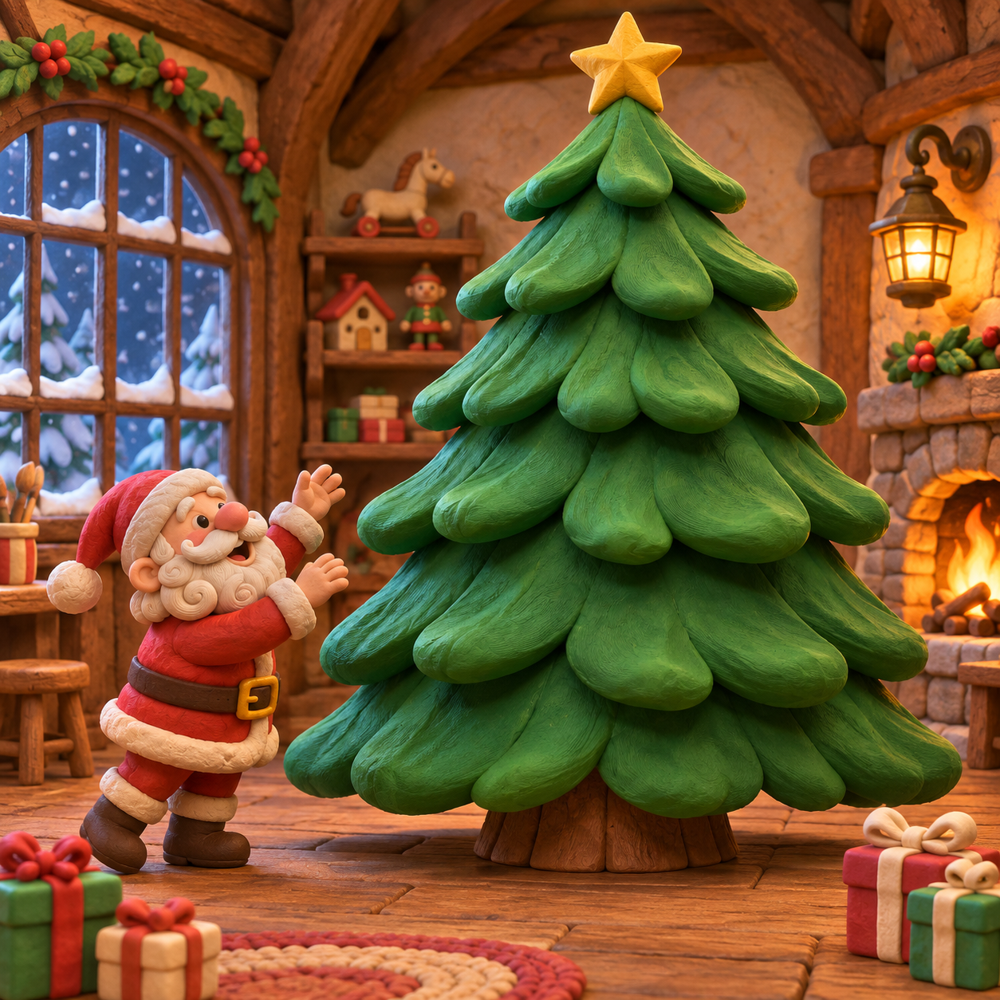

산타의 작업실 시안 모음
큰 트리가 주인공이고, 산타가 곁에서 장식을 달려고 노력하는 공간.
앱에 적용할 방향을 정하기 위한 일러스트 비교판입니다.

선택한 방향 · 픽셀 산타 4종픽셀 산타 동작 실험
기본 NPC, 동글동글한 체형, 긴 코트, 공방 장인. 같은 작업실에서 네 자세를 재생하고 속도와 크기를 비교합니다.
산타 동작 비교판 열기 →
그림체 선택 · 6가지 방향완전히 다른 여섯 그림체
2D 카툰, 수채화 동화, 3D 클레이, 픽셀 게임, 종이 오리기, 플랫 벡터. 두 그림체를 나란히 비교하고 후보를 고릅니다.
그림체 비교판 열기 → 초기 탐색 · 16가지 조합작업실과 산타의 조합
작업실 4종과 산타 4종을 조합합니다. 산타 크기, 장식 수, 움직임, 조명을 바꿔보는 초기 시안입니다.
조합 비교판 열기 →